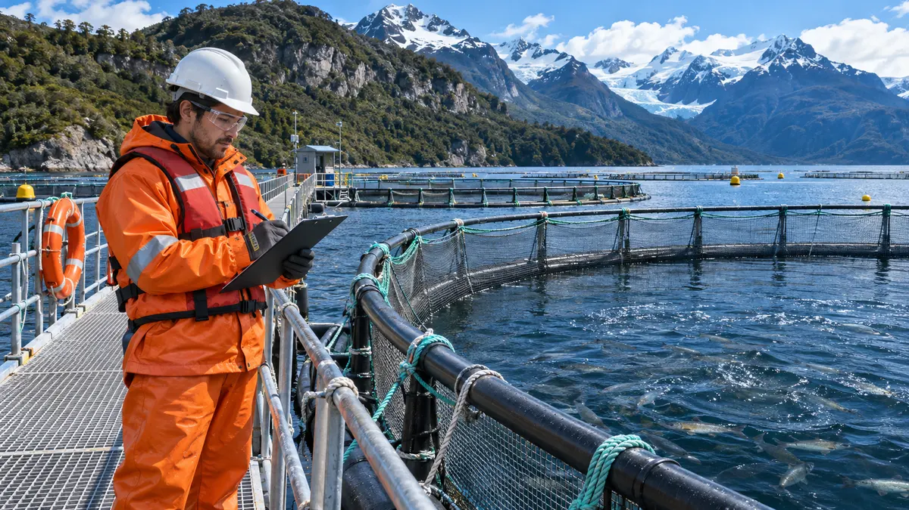

Protégete hoy. Cuida tu salud mañana.
Pronóstico para cielo despejado. No es una medición real.
Modelo de referencia MET Norway · CC BY 4.0
Aplica y reaplica protector solar según sus indicaciones.
Usa protección ocular con filtro UV adecuada para tu tarea.
Cubre brazos, cabeza y cuello con el equipo indicado.
Busca un lugar protegido para las pausas.

Sí. Sigue las medidas de tu centro durante toda la jornada.
Puede aumentar la exposición a la radiación UV.
Es la condición que supone el modelo. El valor en terreno puede variar.